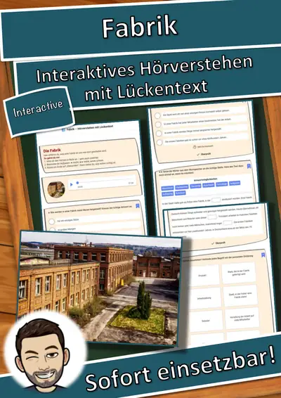

Lesespur: Roboter in der Fabrik: Automatisierung und Arbeit – Lesespurgeschichte mit Rätseln (Klasse 9)
Roboter in der Fabrik – Automatisierung und Arbeit – Lesespurgeschichte Informatik (Klasse 9)Schick deine Klasse auf eine Lesespur durch ein modernes Fahrradwerk! Bei einer Betriebserkundung wollen Hira und Jannes aus der 9a herausfinden, was Roboter in einer Fabrik leisten – und was die Automatisierung für die Menschen bedeutet. Die Ingenieurin Frau Vukovic zeigt ihnen im Besucherzentrum die Grundidee der Automatisierung, im Lager fahrerlose Transportwagen, in der Schweißzelle den Aufbau eines Industrieroboters, in der Lackierkabine Schutzzaun, Lichtschranke und Not-Halt und im Simulationsraum den digitalen Zwilling. An der Montagelinie arbeitet ein Cobot direkt neben den Menschen – dort wartet auch eine Rechenaufgabe. Am Prüfstand kontrolliert eine Kamera jedes Rad, im Leitstand laufen die Daten der vernetzten Fabrik zusammen, und im Schulungsraum diskutiert die Klasse über den Wandel der Arbeit. Das Stoff-Zahnrad Zacki ist immer dabei. Am Ende jedes Abschnitts verrät ein Hinweis den nächsten Ort auf dem Plan – nur wer genau liest, findet den Weg und sammelt alle geheimen Buchstaben zum Lösungswort.
Die perfekte Lesespur für INFORMATIK in der 9. Klasse – ideal für Digitalisierung in der Gesellschaft, Berufsorientierung, Vertretungsstunden und fächerübergreifend mit Wirtschaft, Deutsch und Mathematik: Sie verbindet sinnentnehmendes Lesen mit Robotik-Wissen und Rechenaufgaben zu Prozenten und Taktzeiten. Das Material ist SOFORT EINSETZBAR, braucht keinen Computer und ist in DREI DIFFERENZIERUNGSSTUFEN (leicht ★ / mittel ★★ / schwer ★★★) angelegt.WICHTIG: Das komplette Material ist sowohl in FARBE als auch in SCHWARZ-WEISS enthalten – ideal zum Sparen von Druckkosten.DAS IST ENTHALTEN
- Lesespurgeschichte in 3 Niveaus (leicht, mittel, schwer)
- farbiger Plan vom Fahrradwerk als Suchkarte
- Hörverstehen mit QR-Code zur MP3 (selbstständiges Hören mit Kopfhörern)
- vier Aufträge auf dem Weg: eine Zuordnung, ein Quiz, eine Rechenaufgabe und ein Steckbrief
- Rätselseite (Wörter-Suchsel + Fragen rund um die automatisierte Fabrik)
- Ausmalbild zum Thema (Roboterarm mit Fahrrad)
- ausführliches Lösungsblatt für die Lehrkraft
- alles zusätzlich als komplette Schwarz-Weiß-VarianteSO GEHT DIE LESESPURDie Jugendlichen lesen ab START, finden im Text den nächsten Ort, suchen ihn auf dem Plan und lesen bei dieser Station weiter. An jeder richtigen Station gibt es einen Buchstaben. Eingeplante Sackgassen (Kantine, Parkplatz, Container, Brunnen) sind keine Stationen und dienen der Selbstkontrolle. Am Ende werden die gesammelten Buchstaben umgestellt und ergeben ein geheimes Lösungswort. (Die Lösungen sind selbstverständlich nur im Lösungsblatt für die Lehrkraft enthalten.)INHALTLICHER SCHWERPUNKTRoboter und Automatisierung in der Produktion: Begriff Automatisierung, fahrerlose Transportsysteme mit Sensoren, Aufbau eines Industrieroboters (Achsen, Greifer, Sensoren, Steuerung), Sicherheitseinrichtungen, Programmieren mit Bediengerät und digitalem Zwilling, kollaborierende Roboter (Cobots), Qualitätskontrolle mit Bilderkennung, vernetzte Fabrik und vorausschauende Wartung, IT-Sicherheit sowie Chancen und Risiken für die Arbeitswelt (wegfallende und neue Tätigkeiten, Weiterbildung).ABGEDECKTER LEHRPLAN (Klasse 9, Informatik)
- Informatik (LehrplanPLUS Bayern) – Jahrgangsstufe 9: Digitalisierung in der Gesellschaft – Automatisierung, vernetzte Produktion, Chancen und Risiken; Steuern mit Sensoren und Aktoren.
- Wirtschaft und Beruf – Jahrgangsstufe 9: Wandel der Arbeitswelt.
- Deutsch – Jahrgangsstufe 9: Sachtexte sinnentnehmend lesen, Argumente abwägen; Hörverstehen mit MP3.
- Mathematik – Jahrgangsstufe 9: Prozentrechnung, Rechnen mit Größen (Zeit).
Geeignet für Freiarbeit, Stationenlernen, Vertretungsstunden, Wochenplan, Projekttage und zur Vorbereitung einer Betriebserkundung. Klassenstufe 9.
Ähnliche Materialien

Roboter Lückentext mit Wortspeicher Hörverstehen und Suchsel

Fabrik – Hörverstehen mit Lückentext (interaktiv)

Fabrik Lückentext mit Wortspeicher Hörverstehen und Suchsel

Automat Lückentext mit Wortspeicher Hörverstehen und Suchsel

Industrie Lückentext mit Wortspeicher Hörverstehen und Suchsel

Tastschreiben - Tastschreiben Laminate

Lesespur: Der Saugroboter: Sensoren und Hindernisse – Lesespurgeschichte mit Rätseln (Klasse 3)